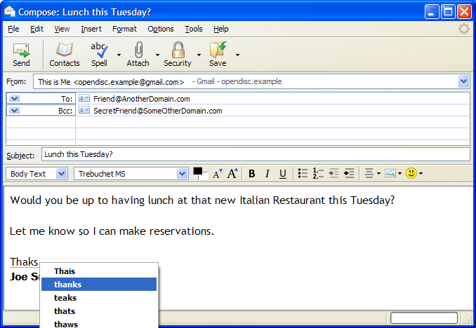

Full-featured email client - reclaim your inbox!
| Thunderbird 38.0.1 Full-featured email client - reclaim your inbox! |
Thunderbird is a modern email client with features such as intelligent spam filters, a built-in spell checker, a range of themes and customisable layout. Thunderbird provides IMAP/POP support, HTML e-mail composing, quick search, address book, advanced message filtering, address completion, import tools, and the ability to manage multiple e-mail and newsgroup accounts. You can add a wide variety of extensions to Thunderbird to add additional features or tweak its behavior to suit your own preferences. As with Mozilla Firefox, security is a central theme. Thunderbird provides enterprise and government grade security features such as S/MIME, digital signing, message encryption, support for certificates and security devices. The intelligent Thunderbird spam filter analyzes your e-mails to identify those that are most likely to be junk. These can be automatically deleted or diverted to a separate folder. The spam filter is adaptive and also learns from your address book and usage to improve its accuracy. |
 |
{kind=link}
{kind=link}